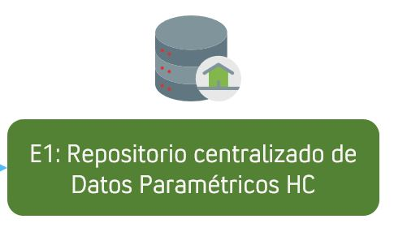

Introducción¶
Contexto¶
Durante el desarrollo del proyecto Diseño Historia Clínica - Gobierno de Datos, el equipo de QCS colaboró estrechamente con el equipo de la Clínica del Country en el diseño funcional y estructural de su Historia Clínica (HC). Este trabajo incluyó, a nivel funcional, la integración de las aplicaciones involucradas y el desarrollo de funcionalidades que satisfacen las necesidades y requerimientos de la organización de manera eficiente, asegurando la alineación con los objetivos estratégicos de la Clínica.
Para ello, el proyecto se estructuró en cuatro grupos de trabajo, cada uno enfocado en aspectos clave para garantizar una implementación exitosa.
- GRUPO 1: EXPLORACIÓN JOURNEY PROCESOS
Analizar el ecosistema y entorno que rodea la Historia Clínica (HC), tanto en procesos como en aplicaciones y datos, con la información entregada por el área de tecnología de Country. - GRUPO 2: DISEÑO INTEGRAL DE LA SOLUCIÓN
Diseño de la solución para el planteamiento de la solución desde todas las perspectivas necesarias. - GRUPO 3: ASPECTOS FUNDAMENTALES
Definición Funcionalidades y Características necesarias en términos de rendimiento, fiabilidad, disponibilidad, acceso y diseño. - GRUPO 4: ESTRUCTURA DE DATOS
Modelo de datos centralizado con el análisis de la situación actual de la información y recomendaciones de gobierno de datos.
De esta manera, el presente documento se enfocada en el componente técnico del GRUPO 4: ESTRUCTURA DE DATOS
Objetivo:¶
El objetivo de este documento es presentar la documentación técnica de los entregables 1 y 2 del GRUPO 4: ESTRUCTURA DE DATOS. Esto es, el Repositorio centralizado de Datos Paramétricos HC y el Modelo Analítico Análisis de Calidad de Datos Paramétricos Historia Clínica.
Entregable 1: Repositorio centralizado de Datos Paramétricos HC¶

Corresponde a un Repositorio Centralizado que almacena los datos paramétricos de la historia clínica, lo cual permite una gestión unificada y optimizada de la información. Para ello, se diseñaron e implementaron procesos de Extracción, Transformación y Carga (ETL), lo cual sirve como insumo para realizar los análisis de calidad necesarios para mejorar el estado de los datos de a cara a la migración a una nueva herramienta.
Estos procesos ETL cumplen varias funciones clave:
-
Extracción: Captura los datos desde las bases COL_CTY y CTY_PRI, garantizando su disponibilidad en el repositorio centralizado.
-
Transformación: Cálculo de metadatos desde COL_CTY y CTY_PRI e indicadores de los componentes de calidad evaluados.
-
Carga: Incorpora la información optimizada en el repositorio centralizado, facilitando su acceso y análisis.
Alcance¶
El Repositorio Centralizado cuenta con los siguientes elementos para su correcto funcionamiento:
- 2 scripts Python para generación y actualización automática.
- Tabla maestra con lista de tablas a incluir, la cual se puede ajustar.
- Script SQL de creación de repositorio generado automáticamente.
Entregable 2: Modelo Analítico de Calidad de Datos Paramétricos Historia Clínica¶
Se trata de un Tablero en Power BI diseñado con el propósito de analizar y comprender el comportamiento de los datos, así como evaluar el estado actual de la calidad de los datos paramétricos asociados a la Historia Clínica.
Este tablero permite a los usuarios visualizar información clave sobre la calidad de datos, a partir de 8 componentes: Exactitud, Completitud, Consistencia, Actualización, Trazabilidad, Conformidad, Credibilidad y Compresibilidad. Lo cual permite identificar posibles inconsistencias, valores nulos o duplicados, y verificar el cumplimiento de las reglas de negocio establecidas en el manejo de la Historia Clínica.
Además, incluye métricas que facilitan el seguimiento de la calidad de los datos en diferentes dimensiones, permitiendo detectar tendencias y patrones que puedan influir en la toma de decisiones estratégicas. Gracias a su capacidad de segmentación y filtros dinámicos, los usuarios pueden explorar los datos desde distintas perspectivas y obtener insights precisos sobre la información almacenada.
Este tablero contribuye a fortalecer el gobierno de datos de la organización, optimizando los procesos de análisis y mejorando la confiabilidad de la información utilizada en la gestión de la historia clínica.
Alcance¶
- 3 scripts Python conectados al repositorio para actualización
- 8 Indicadores de calidad de datos
- 3 Visualizaciones de análisis